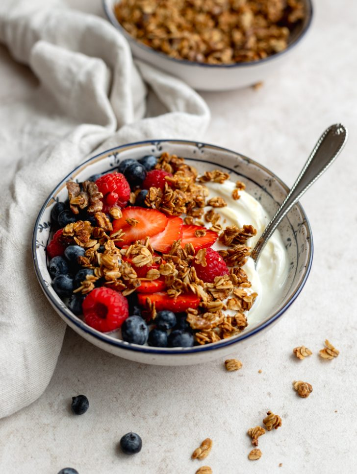

Yogurt con granola y fruta

Ingredientes:
- 1 taza de granola
- 1 1/2 taza de yogurt natural
- 1 manzana verde picada
- 1 manzana roja picada
- Miel, al gusto (opcional)
- Arándanos
¿Cómo prepararlo?!
- En un recipiente coloca una capa de granola
- Agrega el yogurt natural.
- Agrega las manzanas picadas y la miel
- Decora el parfait con los arándanos.
- Sirve de inmediato o refrigéralo para la mañana siguiente.